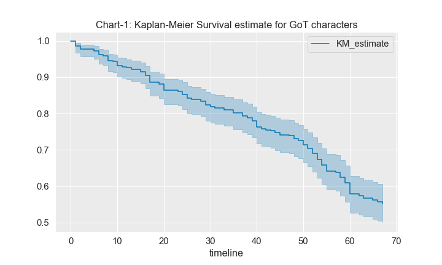
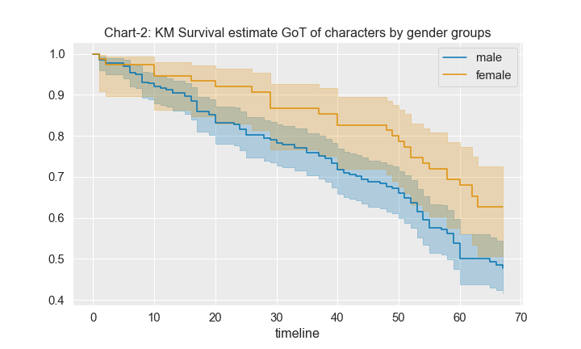
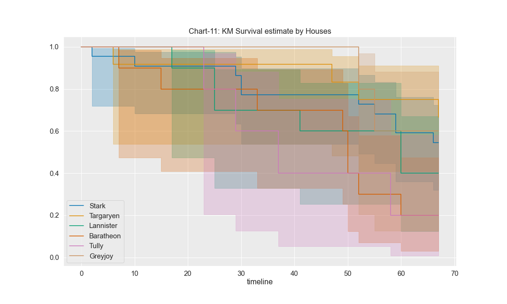

Chart-1: KM Survival Prediction
NOTE: Game of Thrones Character Dataset (Season1-7)

Chart-2:KM Survival Prediction Based on Gender
NOTE: Game of Thrones Character Dataset (Season1-7)

Chart-3: KM Survival Prediction Based on Houses
NOTE: Game of Thrones Character Dataset (Season1-7)
